Ingo Steinke
Creative Web Developer
Inspire Your Customers on the Internet
My name is Ingo Steinke. I'm a sustainable and creative web developer with more than 20 years of professional experience. Customers who have benefited from my work include nexum, Avenga, Planted , and Project Together. I enjoy working for customers with an ecological and ethical focus! I'm a Changemaker, Fairantworter, Green Companion, and a member of Impact Hub Berlin.
I can Work for You
Do you want to overhaul your website? Does your team need support from a front-end developer with full-stack experience?
Call me or leave a message!
It would be my pleasure to discuss your project over a coffee, with no obligations.
Web and Software Projects
Make up your own mind about my work! A selection of my past projects:
Sustainable Fashion Website
 KleiderOrdnung.Berlin is a WordPress-website for the sustainable stylist Tina Steinke featuring an individual frontpage based on the graphic design by Ina Nixdorf. Project code: github.com/openmindculture/kleiderordnung-berlin www.kleiderordnung.berlin
KleiderOrdnung.Berlin is a WordPress-website for the sustainable stylist Tina Steinke featuring an individual frontpage based on the graphic design by Ina Nixdorf. Project code: github.com/openmindculture/kleiderordnung-berlin www.kleiderordnung.berlin
HTML CSS JavaScript PHP WordPress
Atomic Design System
As a senior lead developer, of a team of front-end web developers, I developed a modular system for the relaunch of multiple websites of an international corporate customer.
The Fractal framework served as a technical basis.
HTML CSS Fractal Handlebars Webpack
WooCommerce-Shop
 I support the farm food team Food Together by enhancing the full-site-editing block theme for their WooCommerce shop.
I support the farm food team Food Together by enhancing the full-site-editing block theme for their WooCommerce shop.
foodtogether.de/wer-wir-sind
WordPress WooCommerce PHP CSS
Creatives for Future
 A collaboration between Creatives for Future and Psychologists for Future , the voluntary impact campaign "What you can do" ("Das kannst du tun")" supports mental health and ecological action. daskannstdutun.de
A collaboration between Creatives for Future and Psychologists for Future , the voluntary impact campaign "What you can do" ("Das kannst du tun")" supports mental health and ecological action. daskannstdutun.de
WordPress Elementor CSS
Plugin for Shopware
 My first Shopware 6 project was an administrative plugin facilitates load time optimization for online shops via an API. It has been released in the official Shopware store in 2020. store.shopware.com/waoio62482995391f/wao.io-cache-control.html
Shopware 6 Symfony PHP Vue.js
React Web App
 wao.io's graphical user interface visualized technical data and allowed webmasters to configure how their websites are optimized. I developed and updated app components as a member of the front-end and support team. wao.io/de/about-us/experts/ingo-steinke
wao.io's graphical user interface visualized technical data and allowed webmasters to configure how their websites are optimized. I developed and updated app components as a member of the front-end and support team. wao.io/de/about-us/experts/ingo-steinke
React JSX ES6 CSS-in-JS Storybook
Optimization and Enhancement
 For the Sustainable Development Goals (SDG) consultants of Wandelpunkt-Consulting.de I added new content and optimized the blog's loading time. Wandelpunkt-Consulting.de
For the Sustainable Development Goals (SDG) consultants of Wandelpunkt-Consulting.de I added new content and optimized the blog's loading time. Wandelpunkt-Consulting.de
WordPress Semplice CSS SVG
Portfolio Relaunch
 My relaunched portfolio Ingo-Steinke.com illustrates my work as a web developer. Minimalist design, modern typography, cutting-edge technology, and extensive textual revisions characterize my updated professional portfolio. Source Code:
My relaunched portfolio Ingo-Steinke.com illustrates my work as a web developer. Minimalist design, modern typography, cutting-edge technology, and extensive textual revisions characterize my updated professional portfolio. Source Code:
github.com/openmindculture/ingo-steinke.de
HTML 5 CSS 3 JavaScript Liquid Eleventy
Meetup Management
 In early 2020, I assumed management responsibility for the Cologne web performance meetup. We held a series of international lectures by Patrick Meenan, Andrew Petryk, Anna Backs und Christina Zenzes, amongst others, to inspire an audience extending beyond the borders of the region. www.meetup.com/cologne-germany-high-performance-website-optimization-group
In early 2020, I assumed management responsibility for the Cologne web performance meetup. We held a series of international lectures by Patrick Meenan, Andrew Petryk, Anna Backs und Christina Zenzes, amongst others, to inspire an audience extending beyond the borders of the region. www.meetup.com/cologne-germany-high-performance-website-optimization-group
Event management Web performance
Long-Lasting Solutions
I can implement your layouts across platforms, and pixel-perfectly if needed. My goal is to build long-lasting solutions that are elegant, transparent, and easy to maintain. Modular components, themes, as well as CSS frameworks and methodologies like BEM and Atomic Design help to simplify collaboration and further development. Continuous testing allows me to discover and eliminate errors at an early stage.
Full-Stack Experience
When enhancing existing code, I benefit from professional experience and a pragmatic approach. With back-end and DevOps experience and a high willingness to learn, I can take charge or find a suitable partner for all web development tasks. My focus is CSS based frontend development.
Plugin Development
My preferred approach is to implement back-end interfaces as independent open source modules. For the web performance service wao.io, I developed plugins for Shopware 6 and WordPress. Both plugins were included in the official directories after being successfully tested. I am currently working on WordPress plugins to detect plugin conflicts and to detect plugin conflicts. I also developed themes for Shopware and for JetBrains-based IDEs like PHPStorm and IntelliJ IDEA.
Professional Skills
Web Development
- Markup, Markdown, Template Engines
- CSS
- JavaScript
- PHP
- Database
- XML
Software Stacks
- JAM Stack, Static Site Generators
- Fractal Stack, Design Systems
- WordPress
- Shopware 6
- LAMP Stack
- MERN Stack
Other Tools
- Quality Assurance, Tests, and Audits
- Linters, Bundlers, Transpilers
- Collaboration, Project Management
- Source Control, Versioning
- DevOps, Automation
- Image Editing, Image Optimization
Work and Passion
What still fascinates me
Worldwide communication and inspiration: The World Wide Web connects people with robust and decentralized technology. Websites designed to offer everyone access to this network need to be attractive, fast, and accessible. My work helps to make this dream a reality.
Professional Background
I co-founded a start-up in 2000 whose first products were interactive websites and browser games. Later, our core business transitioned to search engine optimization and our Active-Webshop software.
While employed as an e-commerce engineer at Xsite in Düsseldorf from 2010 to 2014, I developed online shops for Shop-Apotheke.com, Ars mundi, and other customers. As a technical consultant at Sevenval Technologies (later Avenga Germany) in Cologne and Berlin, I optimized the loading time and mobile phone compatibility of apps and websites for Frankfurter Allgemeine Zeitung and online shops for Otto Group and created front-end applications for wao.io and other customers. I have been a freelance web developer since late 2020.
Future Topics and Sustainable Development
In the IT industry, innovation, transformation, and digitalization often mean nothing but technological progress. In many cases, social challenges in ecology, equality, participation, safety, and data protection do not receive the priority they deserve. I want to support ethical and ecological projects, for example the transition in the transport sector, renewable energies, or environmentally friendly fashion. I'm a Fairantworter, a reflecta Changemaker, and I signed the Sustainable Web Manifesto.
In my DEV Blog I regularly publish articles about web development and related technological and societal topics.
Talks and Events
At conferences, courses, and meetups I like to exchange ideas on a professional and personal level.

A selection of my past talks:
- Core Web Vitals: Web Performance and Usability , March 2021
- Meetups in Times of Covid , June 2020 (German)
- Performance Optimization without Changing Code with Angelina Farsch, April 2020 (German)
- HSTS: Increasing Security without Losing Performance , Dezember 2018 (German) at Cologne Web Performance Meetup
- Infrastructure for Improved Web Performance , May 2017 (German) at Cologne Web Performance Meetup
Ingo Steinke
Web DeveloperDonaustr. 83 II
12043 Berlin
Germany
+491634684080
www.ingo-steinke.com
VAT ID DE337676808
Social Media: